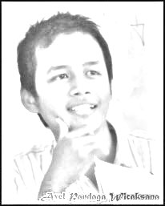

Nama saya axel pandaga wicaksana, usia saya 19 tahun, saya hidup di lingkungan yang sama di Kesamben, Blitar selama delapan belas tahun. Saya lahir pada tanggal 18 Desember 1993. Makanan kesukaan saya telor ceplok. Minuman kesukaan saya adalah susu coklat. Makanan yang paling tidak saya sukai adalah tahu campur. Minuman yang paling tidak saya sukai adalah sari tape Moto hidup saya adalah nikmati setiap detik dalam proses kehidupan kita. Tokoh panutan saya adalah steve job. Saya mengidolai steve job karena ia punya banyak lampu di otaknya yang membuatnya "different" dibanding orang kebanyakan
Saya suka berteman dengan orang yang klop kalau berbicara dengan saya. Kebanyakan sahabat-sahabat saya adalah orang yang nyentrik seperti saya saat masih muda. Teman-teman saya sejak SD, SMP sudah banyak yang pergi ke belahan bumi lain dan saat ini saya sudah jarang bertemu mereka. Tapi bukan berarti saya putus hubungan sama sekali. Kami masih membuat grup reuni di facebook juga setahun sekali saat lebaran kami kumpul-kumpul bareng bersilaturahmi ke guru-guru SD dan SMP kami. Nama ayah saya Agus Priyono. Nama Ibu saya Atik Isnaeni. Keduanya jawa tulen asli.
Saya mengenyam pendidikan SD di SD Kesamben 05 masih di kota yang sama. Pendidikan SMP saya lanjutkan masih di kota yang sama yatu di SMPN 1 Kesamben. Baru pada masa SMA ini saya meloncat keluar menuju kota Talun untuk bersekolah di SMAN 1 Talun.
Ketika bersekolah saya sebenarnya tidak terlalu bersemangat untuk belajar, saya justru tertarik untuk mencari ilmu pengetahuan populer seiring dengan munculnya internet pada masa SMA. Sekarang saya kuliah di Universitas Negeri Malang di Fakultas Teknik, Jurusan Pendidikan Teknik Informatika.
Kedepannya saya ingin menjadi pengusaha,tentunya pengusaha di bidang informatika. Saya bermimpi untuk membentuk perusahaan sebesar google. Tentu saja jika itu tidak memungkinkan, saya masih punya rencana cadangan untuk kuliah S2 agar bisa menjadi dosen. Kalau kelak memang menjadi dosen, saya ingin mengajar di Fakultas Teknik UM
Saya sekarang jomblo, masih kosong. Mencari wanita single yang belum punya pacar(kalo dah punya pacar nanti digebukin ma pacarnya).
